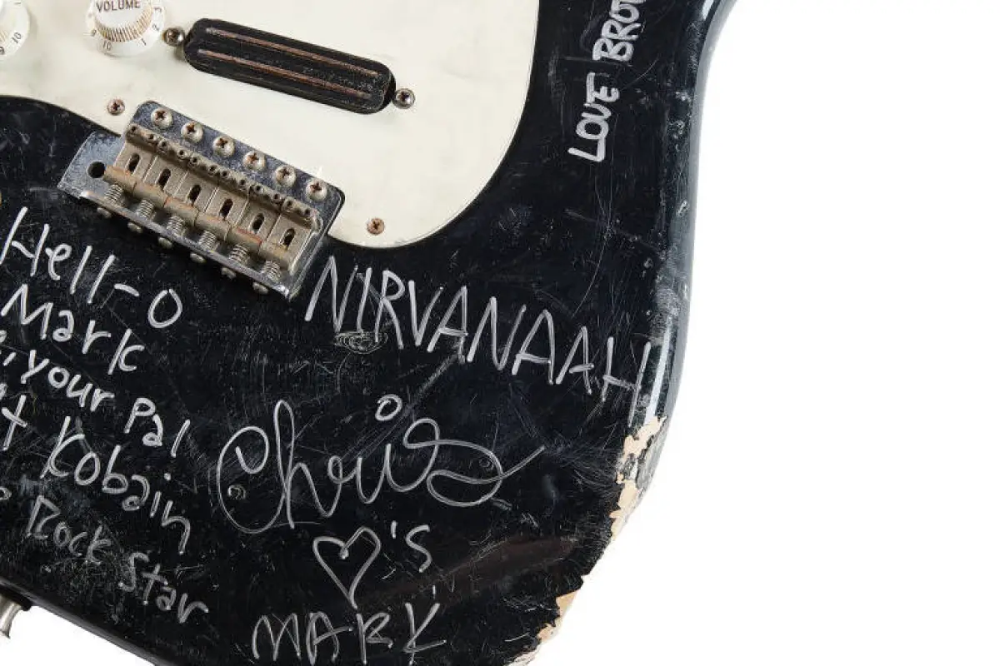

Uma guitarra elétrica quebrada e autografada pelo vocalista do Nirvana, Kurt Cobain, foi vendida
por US$ 595.000 (cerca de R$ 3 milhões),
quase 10 vezes o valor estimado.
O modelo do instrumento é uma Fender Stratocaster preta para canhotos, leiloada no Hard Rock
Cafe, em Nova York, no fim de
semana.
Ela foi a peça principal do leilão de três dias de peças da história do rock.
A guitarra, que foi remontada, mas ainda não pode ser tocada, foi avaliada primeiramente entre $
60 mil e $ 80 mil (entre R$ 300 mil e R$ 400 mil).
A popularidade do Nirvana disparou com seu segundo álbum, “Nevermind”. Lançado em setembro de
1991, o disco vendeu mais de um milhão de cópias nos Estados Unidos até o final daquele ano.
Em 1992, alcançou o primeiro lugar na Billboard 200 – e passou 472 semanas na parada. Em 1994,
Kurt Cobain cometeu suicídio no auge de sua fama, com 27 anos.
De acordo com a casa de leilão Julien’s Auctioneers, Cobain quebrou a guitarra “durante a era
inspiradora do [álbum] Nevermind”, embora nenhum detalhe específico tenha sido fornecido.
O instrumento quebrado é assinado em tinta prateada por todos os três membros da banda: Cobain,
Krist Novoselic e Dave Grohl.
O vocalista também escreveu uma mensagem para seu amigo e colega músico Mark Lanegan, do
Screaming Trees – que morreu no ano passado – dizendo: “Olá, Mark! Com amor, seu amigo, Kurdt
Kobain / Rockstar lavado”.
Gravadas na placa do pescoço da guitarra estão as palavras “Boddah Lives”, referindo-se ao amigo
imaginário de infância de Cobain.

Também foi leiloado um setlist do Nirvana, que se acredita ter sido escrito à mão em caneta rosa
por Grohl para o show da banda em 17 de abril de 1991 no OK Hotel em Seattle, Washington. Esta
foi a apresentação de estreia de uma das músicas de maior sucesso do grupo: “Smells Like Teen
Spirit”.
O setlist foi vendido por $ 50.800 (R$ 251,7 mil), 12 vezes a estimativa original, que era de $
4.000 (R$ 19 mil).
O leilão também contou com um pôster enorme do álbum “Nevermind”, vendido por US$ 10.400 (R$
51,5 mil), bem como itens de muitos outros músicos famosos, incluindo Elvis Presley, Beatles,
Freddie Mercury e Amy Winehouse.
Em 2020, a guitarra tocada por Cobain durante sua apresentação no “MTV Unplugged” de 1993 se
tornou a guitarra mais cara já vendida em leilão, chegando a US$ 6 milhões (R$ 29,7 milhões).
A guitarra Martin D-18E de 1959 foi utilizada em um famoso show do Nirvana em Nova York, cinco
meses antes da morte de Kurt Cobain.
Além disso, outra das guitarras do músico ficou em segundo lugar em um leilão no ano passado,
quando o instrumento que ele tocou no vídeo “Smells Like Teen Spirit” – uma Fender Mustang 1969
– foi vendida por US$ 4,5 milhões (R$ 22,3 milhões).
*Amy Woodyatt, da CNN, contribuiu para esta reportagem